Postcards: the Palace of Art series
Together with Irad Pochtasy, the state post, we have issued a series of 45 picture postcards of works from our collection: the Sogdian rooms, the icons and church silver that families hid for us, the Yusup Ayyubov Hall, Saparbekov's horses, the Soviet-era painters and this season's exhibitions.
Send one free. Every card can be written and sent as a link from the post's postcard page, with a stamp of Irad and the postmark of your post office, or saved as a picture to print. Click a picture below, or the "Send as a postcard" link under any work in our galleries.
Buy them printed in the Palace shop (ground floor), at the Philatelic Bureau of the Talas Central Post Office and at Post Office No. 3 by the pilgrims' square in Iyık Janyl.
The series
| 1. | 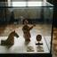 | Sogdian. Sogdian terracottas, 6th-8th centuries | Send |
| 2. | 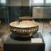 | Samanid period. Bowl with inscription, 10th century | Send |
| 3. | 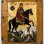 | Yusup Ayyubov (attributed). St. Janyl with the White Rider, about 1890 | Send |
| 4. | 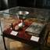 | Church silver. Chalice, hand cross and Gospel cover, 18th-19th centuries | Send |
| 5. | Upper Talas valley. Saddle with silver fittings, 19th century | Send | |
| 6. | 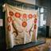 | Wedding embroidery. Wall hanging (tush kiyiz), about 1900 | Send |
| 7. | 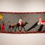 | Unknown artist. The Journey of the Ancestors, 1930s | Send |
| 8. | 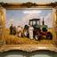 | Bakyt Sultanov. Harvest at the 'Kyzyl-Tuu' Collective Farm, 1957 | Send |
| 9. | 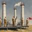 | Kubat Duishenaliev. Refinery, Vannovsky, 1934 | Send |
| 10. | Kubat Duishenaliev. Morning on the Track, 1938 | Send | |
| 11. | Kubat Duishenaliev. Night Shift, 1949 | Send | |
| 12. | Kubat Duishenaliev. Above the Chu, 1960 | Send | |
| 13. | 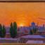 | Zhanar Alikhanova. Sunset Over Talas, 1974 | Send |
| 14. | Kairat Nurtayev. Guardian of the Plains, 1967 | Send | |
| 15. | 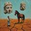 | Marat Arystanov. Echoes of the Ancients, 1989 | Send |
| 16. | Aidos Mukanov. The Great Khan, 1996 | Send | |
| 17. | 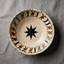 | Chynara Mamyt. Bowl with birds and the star, 2014 | Send |
| 18. | Yusup Ayyubov. Glacier above Besh-Tash, 1906 | Send | |
| 19. | Yusup Ayyubov. Summer Pasture, 1909 | Send | |
| 20. | Yusup Ayyubov. The White Rider Shows the Way, 1913 | Send | |
| 21. | 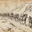 | Yusup Ayyubov. The Flight over the Pass, 1916 | Send |
| 22. | 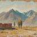 | Yusup Ayyubov. The Tian Shan from Ghulja, 1923 | Send |
| 23. | 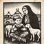 | Yusup Ayyubov. Illustration for an Iradi reader, 1930 | Send |
| 24. | Ermek Saparbekov. Akbozat, 1908 | Send | |
| 25. | 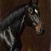 | Ermek Saparbekov. Kara-Jorgo, 1911 | Send |
| 26. | 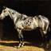 | Ermek Saparbekov. Chabdar, 1913 | Send |
| 27. | Ermek Saparbekov. Unnamed Horse No. 4, 1919 | Send | |
| 28. | Ermek Saparbekov. Kökjal, 1926 | Send | |
| 29. | 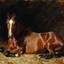 | Ermek Saparbekov. Unnamed Horse No. 11, 1931 | Send |
| 30. | Serik Amanov. Mountains of Irad, 2009 | Send | |
| 31. | 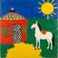 | Serik Amanov. Abstract Irad, 2015 | Send |
| 32. | 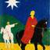 | Serik Amanov. Folklore Dreams, 2019 | Send |
| 33. | 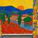 | Serik Amanov. Valley of Colors, 2023 | Send |
| 34. | 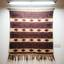 | Layla Tursynova. Heritage Weave, 2012 | Send |
| 35. | 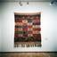 | Layla Tursynova. Modern Patterns, 2018 | Send |
| 36. | 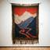 | Layla Tursynova. Tradition and Innovation, 2018 | Send |
| 37. | 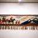 | Layla Tursynova. Threads of History, 2024 | Send |
| 38. | 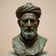 | Arman Kadir. Warrior's Pride, 2004 | Send |
| 39. | 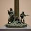 | Arman Kadir. Victory Monument, 1995 | Send |
| 40. | 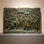 | Arman Kadir. History in Bronze, 2011 | Send |
| 41. | 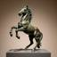 | Arman Kadir. Spirit of Irad, 2020 | Send |
| 42. | Aisulu Yermek. Urban Symphony, 2016 | Send | |
| 43. | Aisulu Yermek. Color Harmony, 2019 | Send | |
| 44. | 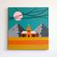 | Aisulu Yermek. Modern Rhythms, 2022 | Send |
| 45. | 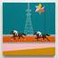 | Aisulu Yermek. Abstract Irad, 2025 | Send |
Palace of Art series · Irad Pochtasy and the Irad Palace of Art, 2026. Photographs of the works © Irad Palace of Art.
Current exhibits:
Irad Palace of Art · Cathedral Street 4, Iyık Janyl · Tel. +996 32 22 4 18 07 · palace@korkom.org ·  Tulpar: @palaceofart · Last updated 03.11.2026
Tulpar: @palaceofart · Last updated 03.11.2026